5580M om-board navigator
- Path
- Descriptions > 55 ELECTRICAL EQUIPMENT > 5580 SPECIAL ACCESSORIES > 5580M om-board navigator
- Kind
- system description
- Applies to
- all engines; all production periods
- Interactive page
- https://sloeber94.github.io/elrnDB-fMltpl/en/#/2888296
Applies to: all engines; all production periods
On request, a road-map "Navigator" is available, integrated in the dashboard.
It is the Magneti Marelli ROUTE PLANNER customized for this vehicle.
The navigation system informs you of the vehicle's position on the map (in relation to both urban and non-urban/motorway road networks), by showing it on the display. In this way, the driver is taken to the desired destination, guided step-by-step by voice messages and visual information. The system also provides additional information for reaching services of general interest, such as hotels, car parks, restaurants, pharmacies, service stations, hospitals, workshops, railway stations, airports, etc.
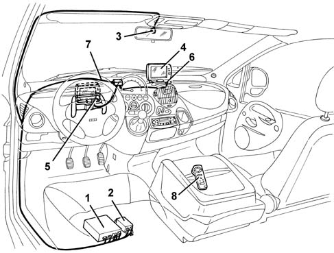
1, Central unit 2, Power supply 3, GPS aerial 4, Display / loudspeaker 5, 1st display housing 6, 2nd display housing 7, Connecting cables 8, Remote control
Central unit
The central unit is located unter the driver's seat, and manages the operation of the entire system; it is connected to the vehicle's cables from which it receives its supply, earth. milometer signal, reverse gear signal and driver's door open.
All the procedures required to implement the main functions are carried out by the central unit.
In addition, a power supply is located beside the central unit (this is a transformer (DC/DC converter) which generates several outputs with stabilized voltage values.
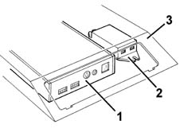
1, Central unit 2, Power supply 3, Mounting bracket
Cd player
A CD player is incorporated in the central unit: it reads the CDs containing the mapping and all the other information relating to a country.
The CD of the country where the car is sold is supplied as standard. Other CDs are available on request All the CDs are updated periodically (every 6 months)
If, when the system is switched on, the player does not manage to "read" a CD, the latter is automatically ejected.
In most cases, simply clean the CD carefully with a soft cloth to remove any dust deposits or impurities.
Gyroscope
The gyroscope - located inside the central unit casing - detects the rotation of the vehicle and enables the map to be orientated.
It is a piezoelectric sensor which detects the value of the angular shifts (rotations) made by the vehicle: if the vehicle makes an angular shift (rotation), a Coriolis force is generated on the sensor's sensitive element, proportional to the angular speed (degrees per second) which, by integration, indicates the angular shift (degrees) performed by the vehicle.
Gps receiver
The central unit casing also houses the GPS receiver, which processes the GPS (Global Positioning System) functions required by the navigation system:
- initial location of the vehicle;
- initial self-calibration of the sensors (milometer and gyroscope);
- assistance with navigation (check on correct location of the vehicle in relation to that detected by the sensors);
- synchronization of the central unit internal clock;
- location of the vehicle in areas not covered by maps and in the case of transported vehicle (ferry, train, etc.).
GPS aerial
A GPS satellite aerial, located in the interior rearview mirror mounting, permits GPS (Global Positioning System) satellite location of the vehicle: the aerial is connected to the relevant receiver in the central unit by means of a specific shielded cable.
Display and speaker
A removable 5.6" colour display has two possible installation positions: one oppposite the driver, and a more central position. The display is easily extracted using a lever and can be moved from one position to the other.
The display incorporates a loudspeaker at the rear for the voice messages.
The display shows the selected route; the loudspeaker accompanies the display with voice messages in various languages.
On one side of the display there are:
- LED which indicates that the system is working;
- ambient light sensor;
- IR receiver (for remote control).
The control keys are grouped together at the top of the display:
- system general switch (red);
- MODE selection button;
- adjustment button.
There are three adjustable functions:
- "VOLUME", which controls the volume of the built-in speaker;
- "BRIGHTNESS", which controls the brightness
- "DIMMER" which controls the dimming at night:
- HI high dimming
- LO low dimming
- SELF automatic dimming, in relation to the measured light.
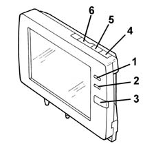
1, LED 2, ambient light sensor 3, IR receiver 4, general switch 5, MODE selector button 6, adjustment button
Remote control
A wireless infrared remote control activates the system, sends commands to the display and enters data.
The joystick at the top is for moving the cursor on the display and selects the various functions (by pressing OK at the centre).
The keys at the bottom have the following function:
- "MENU + -" key: moves to the next or previous menu;
- "MAP" key: return to the navigation screen;
- "INFO" key: moves from one screen to another;
- "RG" key: activates/deactivates assisted driving;
- "*" key: activates repetition of the last voice message;
- "ZOOM + -" key: varies the scale selection;
The bottom key lights up all the other keys.
The remote control has no attachment point in the car, but is free standing.
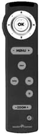
The navigator allows the driver to know the position of his vehicle at every instant, by displaying it on the map, and helps the driver reach the desired destination.
The system also allows the driver to obtain easily additional information on services of general interest (hotels, car parks, restaurants, pharmacies, service stations, hospitals, workshops, railway stations, airports, etc.).
These objectives are achieved by means of the following three basic functions:
- Location of the vehicle
- Route planing
- Driving assistance
Location of the vehicle
The vehicle location function is executed by means of two successive processes of "vehicle recognition" and "map superimposition", i.e. first estimating the position of the car by means of information coming from the GPS, and then correcting this estimate with the signals coming from the sensors (milometer and gyroscope), so that the estimated point matches the corresponding point on the road network.
The position is first calculated approximately (to a precision of about 150 m) with the GPS (Global Positioning System) satellite locating system: i.e. the position and direction of the vehicle on which a specific GPS aerial is installed is thus acquired from satellite. As in an urban environment, the reception of signals from satellites is hindered by the presence of buildings, use of the GPS is particularly suitable in non-urban areas, where, on the other hand, the response from the sensors is less reliable and the road network does not permit such accurate correction of the estimated position and on the urban road network.
Satellite location is also carried out when the vehicle is at a standstill, provided it is in an area which ensures full upward visibility.
For "finer" locating, two signals are used, which are only present when the vehicle is moving:
- angular speed of the vehicle, supplied by a gyroscope;
- milometer signal, supplied by the instrument, for measuring the distance travelled.
The purpose of this process is to match the estimated point with the exact corresponding point on the actual road network, assuming that the vehicle is obliged to travel on the road network.
The method consists of making a section-by-section correlation between the estimated route and the actual network, by memorizing the history of the vehicle's journey, and thus being able to position the vehicle on the exact point on the network.
The superimposition of the arrow indicating the vehicle on the vehicle symbol indicates that this operation has been successful. On the bottom of the display, the name of the municipal district and the road of the located point are also shown.
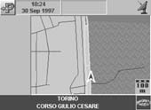
Route planning
The route-planning function aims to calculate the optimum route between the vehicle's position and the destination chosen by the user. The calculated route is displayed and shown on the road network map.
The route optimization criterion acts on the parameters of length and bends of the road, and so favours straighter roads (of higher functional level, e.g. motorways, highways), and at the same time tends to minimize the number of turnings.
All the parameters which can affect the negotiability of a section of road are also considered, such as particular access restrictions (private roads), road surface conditions (non tarmacked roads) or speed restrictions.
If the driver suddenly decides to change the planned route, or accidentally takes a different road from the expected road, the system automatically recalculates an alternative route, taking into account the diversion made.
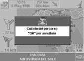
-
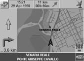
If, on the other hand, it is the driver who decides, for example, after being informed of problems on one or more sections of the calculated route, the system is capable, by selecting the "calculate alternative route" function to , to avoid the vehicle travelling through congested or problematic areas.
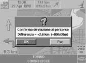
Assisted driving
The driving assistance function consists of providing two types of information to the user: graphic information represented on the display and audio information consisting of voice messages.
When the vehicle moves following the calculated route, an arrow which represents the vehicle's position and the direction of travel on the display, allows the driver to follow the movements of his vehicle on the town map.
In addition, at every instant some support information is displayed with graphic symbols: the scale of representation, the direction of the destination (as the crow flies), the distance from the calculated destination along the established route; the latter piece of information is updated as the vehicle proceeds along the route.
When the car approaches an intersection where the route takes a turning, a window is shown on the display which contains a simplified drawing of the intersection, on which an arrow is clearly interposed, indicating the direction of the turning. In addition a dynamic length bar is updated as the vehicle approaches the intersection, thus indicating the distance from the exact point where the turning should be made, so that the driver can identify unmistakably the precise point of the turning, even in the case of intersections which are very close together.
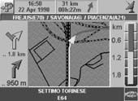
When the window which illustrates the intersection is displayed, a first voice message is emitted which gives information on the direction of the turning and the distance from the intersection; the maximum distance from the intersection which causes the voice message to be emitted is calculated on the basis of the vehicle's speed. A second message of the same type is repeated a few metres from the precise point where the turning should be made.
Activating the system
The system comprises an auto-activation logic controlled by the opening of the driver's doodr:
- when the door opens, the system is activated automatically;
- if during the next 3 minutes the ignition is switched on, the system stays on
- if nothing happens during the next 3 minutes and the door is reclosed, the system switches itself off
- when the ignition is turned off, the system switches itself off after 6 minutes.
Functions of the system
For further details on use of the system, refer to the specific appendix in the Owner's Handbook.
Numerous Menus can be selected from the display.
Selecting the destination point, makes it possible to:
- enter the desired address;
- select from the list of useful services (hotels, car parks, restaurants, pharmacies, service stations, hospitals, workshops, railway stations, airports, etc.).;
- access the address book or the last destinations;
- display the current point (with cross-shaped cursor).
Controls, make it possible to:
- select the type of display (MAP, ROUTE INFO, COMPASS);
- display the Atlas, i.e. the inset map and cross-shaped cursor;
- display the alternative route;
- cancel the destination;
- change the scale;
Configuring the system makes it possible to:
- select the language, the local time and the date. NOTE: The original selected language is ENGLISH. For other Markets, the first operation must be to change the selected language.
- configure the route calculation mode;
- configure the map which is displayed;
- manage the address book data
TEST :Menu reserved for the Service Network, to be used to calibrate the system and diagnose any faults that may be found, described in detail below.
Test menu
This Menu is not accessible to the Customer: to access it, the Service Network is given PASSWORD (enter PASSWORD = 11111 if not indicated otherwise)
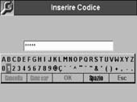
It consists of two sub Menus:
- CALIBRATION : check calibration of the milometer signal and initialization of the GPS aerial.
- DIAGNOSIS : check the state of the system components.
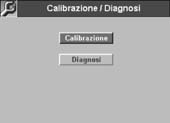
Proceed as follows:
- with the Navigator switched on, check that the inserted CD is that for the mapping of the country where the car is situated;
- select the language from the specific Menu and then activate the TEST Menu;
- using the remote control, enter the password and select "CALIBRATION" or "DIAGNOSIS"
(To exit from the TEST Menu, use the "MENU" key on the remote control)
Test - calibration
-
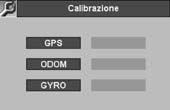
GPS
The "GPS" box becomes green at the end of the automatic calibration stage (see PRELIMINARY OPERATIONS ).
If not, the system needs to be checked (see TEST- DIAGNOSIS ).
MILOMETER
The "ODOM" box is red when the Navigator is switched on after installation.
It becomes yellow during the course of calibration, and then green at the end of calibration. (see PRELIMINARY OPERATIONS ).
If not, the system needs to be checked (see TEST -DIAGNOSIS ).
GYROSCOPE
The "GYRO" box must be green from the first time the Navigator is switched on after installation. If not, the system needs to be checked (see TEST - DIAGNOSIS ).
Test - diagnosis
-
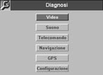
VIDEO
Press the OK button on the remote control 4 times in succession and check that the colours which appear in succession on the display are: red, green, blue, 16-colour bars.
SOUND
An acoustic signal is emitted from the display's loudspeaker to check its operation.
REMOTE CONTROL
Press in succession all the keys on the remote control: on the display, the corresponding keys become blue as soon as they are pressed.
NAVIGATION
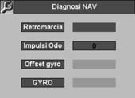
The "REVERSE GEAR"box becomes green when reverse gear is engaged.
The "ODO PULSES "box , from red, becomes yellow (a few minutes after the first activation of the Menu), provided that the vehicle is at a standstill with the handbrake on.
Subsequently, when the vehicle moves slowly (at a speed of less than 20 km/h), it becomes green and counts the number of milometer pulses (negative number if reverse gear is engaged).
If the box remains red or yellow whilst the vehicle is moving, check the electrical connection to the instrument.
The "OFFSETGYRO" box must always be green, both when the vehicle is stopped and when it is moving.
The"GYRO"box must always be green when the vehicle is at a standstill or moving in a straight line, and red when the vehicle is on a bend (pronounced angular movement).
GPS
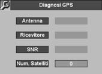
TheAERIAL"box must be green if the GPS aerial is connected correctly to the central unit.
The "RECEIVER" box must be green after automatic calibration (see PRELIMINARY OPERATIONS ), and after the Navigator is switched off and on again.
The "SNR"box indicates that the GPS signal received is OK.
The "NO. SATELLITES" box after the automatic calibration stage (see PRELIMINARY OPERATIONS)and a few minutes after the Navigator has been switched on, displays the number of GPS satellites recognized.
The Navigator needs at least 3 satellites (with green background to the box) to locate the vehicle correctly.
CONFIGURATION
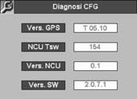
CThe data on this screen are service data, which can only be used by the Manufactuere of the system
Preliminary operations
open the driver's door and check the auto-activation software described above;
check the correct insertion of the map CD of the country where the car is situated;
check the presence or fit suitable batteries in the remote control
select the specific menu and check the system configuration (language, local time and date)
carry out AUTOMATIC SYSTEM CALIBRATION as described below:
System calibration
The system does not require manual operations to calibrate the sensors, as these are carried out automatically by the navigator's control software.
The Service Network must therefore make the system conduct an automatic calibration, in order to deliver a navigator to the Cusomer which is already calibrated with the optimum operating values.
If not, the Customer should be informed that for a variable period, depending on the route, (a non-urban and motorway route is recommended) but lasting at least about 30 - 45 minutes, the system will not be operating fully and accurately.
This calibration is carried out when the system is new (or if the central unit is replaced), but also each time the vehicle battery is disconnected for more than 12 hours.
In the event of prolonged work on the vehicle, it is advisable to connect an auxiliary battery
Gps auomatic calibration
Position the vehicle outside, in an area where full upward visibility is ensured.
Leave the vehicle at a standstill, with the engine running and handbrake on, for about 20 minutes until the "satellite" symbol appears at the top of the display.
At the end of this stage, check the status of the GPS parameters via the TEST MENU - CALIBRATION.
Milometer automatic calibration
Take the vehicle on a journey (preferably motorway) at a constant speed above 60 km/h (if permitted by road regulations), until the optimum milometer parameters are obtained, i.e. when, in relation to the actual movements of the vehicle, the red arrow on the display behaves correctly (i.e. the arrows must follow the vehicle's actual movements exactly).
At the end of this stage, check the status of the milometer parameters via the TEST MENU - CALIBRATION.
Topics that link to this page (7)
- 5580M18 navigation system mount(1), lh or rh - r r
- 5580M30 navigation system control unit cd unit - r r
- 5580M70 aerial for on-board navigator - r r
- 5580M80 on-board navigator system wiring harness - r r
- 5580M84 navigation system mount junction unit - r r
- E4090 NAVIGATOR - Description
- E4090 NAVIGATOR - Description